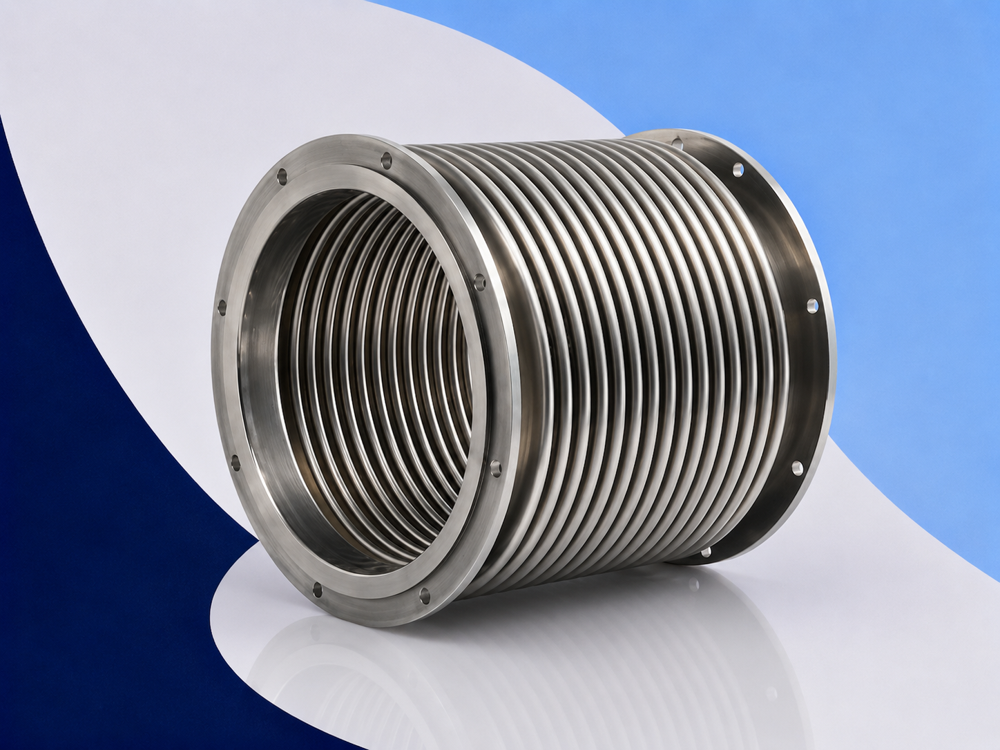
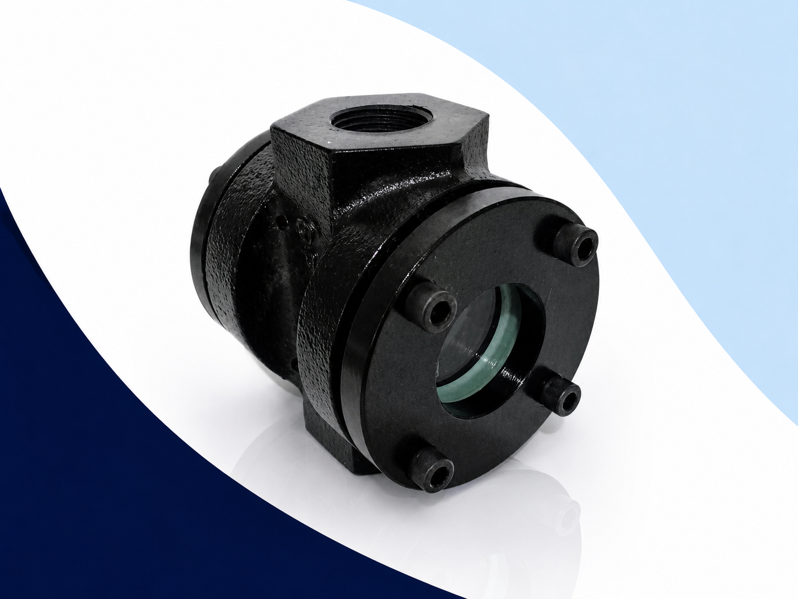
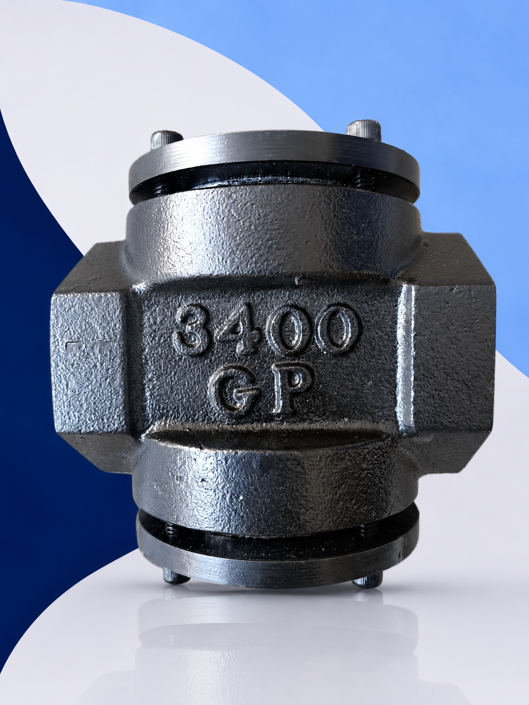
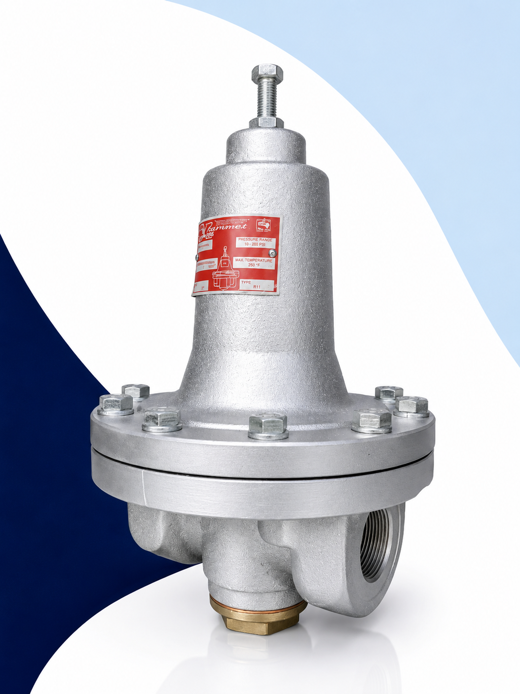

Productos
Equipos y soluciones industriales para sistemas de vapor, control de fluidos y procesos eficientes.
Juntas Rotativas
Las juntas rotativas son dispositivos diseñados para transferir fluidos entre una línea fija y un equipo rotativo en movimiento continuo, manteniendo un sellado seguro y eficiente durante la operación industrial.
En Defany Industrial ofrecemos soluciones para vapor, agua, aire y aceite térmico en industrias papeleras, textiles, cartoneras y manufactureras, incluyendo aplicaciones de calentamiento, enfriamiento y control térmico.
Aplicaciones principales
- Vapor industrial
- Agua y enfriamiento
- Aceite térmico
- Aire comprimido
- Sistemas rotativos
- Procesos térmicos


Trampas de Vapor
Las trampas de vapor son dispositivos diseñados para eliminar condensado, aire y gases no condensables de sistemas de vapor sin generar pérdidas significativas de vapor vivo. Son fundamentales para optimizar la eficiencia térmica y proteger los equipos industriales.
En Defany Industrial ofrecemos soluciones para industrias papeleras, cartoneras, textiles y alimenticias, con tecnologías de cubeta invertida, termodinámicas y flotador termostático.
Aplicaciones principales
- Sistemas de vapor
- Procesos térmicos
- Líneas industriales
- Equipos de calentamiento
- Industria papelera
- Industria alimenticia


 Bridada
Bridada
 Tipo silbato
Tipo silbato
Válvulas de Seguridad y Alivio
Las válvulas de seguridad y alivio son dispositivos diseñados para proteger recipientes, calderas y sistemas industriales contra sobrepresión, liberando automáticamente la presión excedente para evitar daños operativos y riesgos industriales.
En Defany Industrial ofrecemos soluciones para sistemas de vapor, aire, agua y fluidos industriales, incluyendo válvulas roscadas, bridadas y operadas por piloto para aplicaciones industriales críticas.
Aplicaciones principales
- Calderas industriales
- Sistemas de vapor
- Recipientes a presión
- Compresores
- Líneas de proceso
- Sistemas neumáticos
Soluciones disponibles
Válvulas Industriales
Línea completa de válvulas para control, regulación y corte de fluidos en sistemas de vapor, agua, gas y procesos industriales de alta exigencia.

Válvulas de Bola
Control y corte preciso de fluidos en sistemas industriales de alta presión.

Válvulas de Compuerta
Aislamiento total de flujo en tuberías de vapor, agua y fluidos industriales.

Válvulas Check
Prevención de retorno de fluidos para proteger equipos y sistemas industriales.

Válvulas de Globo
Regulación precisa de caudal en procesos térmicos y sistemas de vapor.
Bombas Industriales
Las bombas industriales son equipos diseñados para mover, transferir y presurizar fluidos en sistemas industriales y procesos de producción, siendo fundamentales en aplicaciones de agua, condensado, químicos, HVAC y procesos térmicos.
En Defany Industrial ofrecemos soluciones de bombeo para transferencia de fluidos, presión constante y sistemas hidráulicos, trabajando con marcas reconocidas como Aurora Picsa, Grundfos, ARO y Sentinel.
Marcas principales
Tipos de bombas
- Bombas centrífugas
- Bombas neumáticas
- Bombas sumergibles
- Bombas de diafragma
- Bombas para condensado
- Sistemas HVAC
- Bombas STC
- Sistemas hidráulicos
Aplicaciones industriales


Manómetros y Termómetros Industriales
Los manómetros y termómetros industriales son instrumentos para monitorear presión, vacío y temperatura dentro de procesos industriales, garantizando seguridad, eficiencia y control operativo preciso.
En Defany Industrial ofrecemos soluciones para sistemas de vapor, recipientes a presión, HVAC y automatización industrial con marcas como DeWit, METRON Infra, WIKA y Ashcroft.
Marcas principales
Soluciones disponibles
- Manómetros industriales
- Manómetros con glicerina
- Vacuómetros
- Manómetros diferenciales
- Termómetros bimetálicos
- Termómetros digitales
- Instrumentación industrial
- Accesorios y calibración
Aplicaciones industriales
Disponibles en acero inoxidable, latón y configuraciones industriales para aplicaciones de presión, temperatura y control de procesos.
Conocer más
Mangueras Metálicas
y Juntas de Expansión
Aplicaciones Industriales
Ventajas Principales
- Absorben vibraciones mecánicas
- Compensan dilataciones térmicas
- Corrigen desalineaciones
- Alta resistencia a temperatura
- Fabricación acero inoxidable
- Larga vida útil
Mangueras Metálicas Flexibles
Tubería corrugada de acero inoxidable con malla para absorber movimientos y variaciones térmicas.
Juntas de Expansión Metálicas
Dispositivos para absorber movimientos axiales, laterales y angulares en tuberías.
Visores de Flujo Industriales
Los visores de flujo permiten inspeccionar visualmente el paso de líquidos, gases y fluidos dentro de sistemas de tuberías industriales, verificando la operación y facilitando el mantenimiento preventivo.
Aplicaciones Industriales
Características Principales
- Inspección visual en tiempo real
- Alta resistencia mecánica
- Fácil instalación
- Construcción robusta
- Refacciones disponibles
- Bajo mantenimiento



Reguladores de Presión
Los reguladores de presión son dispositivos mecánicos diseñados para reducir y mantener una presión constante en la salida del sistema, incluso cuando existen variaciones en la presión de entrada o cambios en la demanda del proceso.
En Defany Industrial ofrecemos reguladores y reductores de presión para vapor, aire, agua, gases y fluidos de proceso con soluciones VAYREMEX y marcas especializadas.
Precisión
Regulación estable y confiable.
Respuesta rápida
Control ante variaciones de presión.
Bajo mantenimiento
Diseño robusto industrial.
Modelos Destacados
Para vapor, aire y gases industriales.
Para agua, aceite y líquidos en general.
Para aplicaciones de mayor presión.
Conexión bridada para líneas industriales.
Aplicaciones
Materiales
- Hierro gris
- Acero al carbón
- Acero inoxidable
Conexiones
- Roscadas NPT
- Bridadas ASME